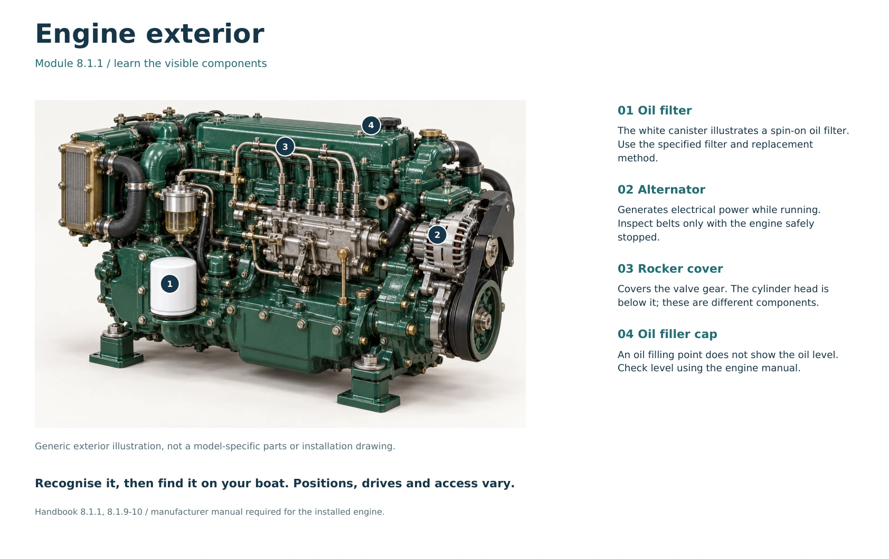
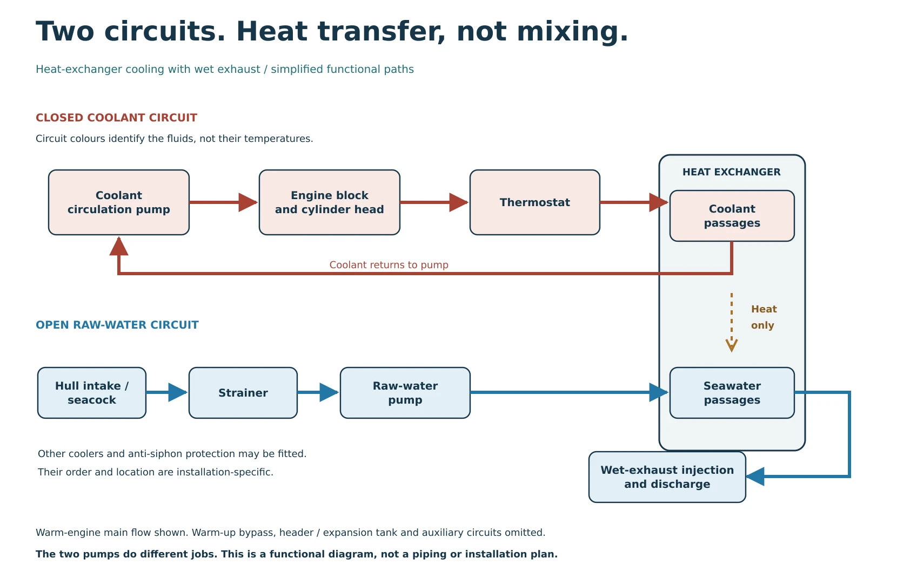

Marine diesel daily checks:
a boat owner’s checklist
Before starting, check the engine’s condition, fluid levels, fuel supply and cooling-water arrangements using its own manual. After starting, confirm the expected cooling discharge where applicable, normal indications and absence of new leaks. Keep monitoring underway.
A useful engine check is a comparison: what is normal for this installation, and what has changed? A new drip, damaged belt or unexpected level deserves attention before the boat leaves its berth.

Before starting: inspect, then verify
1. Look around the engine and bilge
Look for fresh fuel, oil or coolant leaks, unusual water, loose items and changes since the last visit. Inspect accessible hoses, connections and belts for visible damage while stopped. A photograph or log entry can help you compare later checks.
Do not wipe away an unexplained leak and treat the inspection as complete. Find its cause or obtain competent help.
2. Check oil using the correct method
Follow the engine manual for when and how to read the dipstick, including any required settling time. Use its marks and specified oil; do not overfill. Check the gearbox separately using the gearbox maker’s procedure, which may differ from the engine’s.
3. Check coolant and the cooling-water path
On an engine with a closed coolant circuit, check its level at the specified point and temperature. Use the prescribed coolant specification. A repeated need to top up is a fault to investigate, not a routine to accept.
For a seawater-cooled installation, verify the correct intake-valve position and inspect the strainer as the boat’s procedure allows. Do not start a raw-water pump dry. Keel-cooled and dry-exhaust installations have different checks; not every diesel should discharge water from its exhaust.
4. Confirm fuel, belts and electrical readiness
Check usable fuel against the planned trip and reserve. Inspect the accessible fuel system for leaks and check any water-separator indication fitted. Do not loosen high-pressure injection pipes or search for a pressurised leak with your hand.
Look at belt condition and accessible electrical connections without disturbing them unnecessarily. Check belt tension only by the specified method with the engine safely isolated. Correct battery-switch positions and alarm-test behaviour depend on the installation.

Immediately after starting: confirm the essentials
Start and warm the engine according to its manual. Check that the expected alarms clear and that oil pressure, charging indications and other readings behave as specified. Do not borrow another engine’s “normal” numbers.
On a wet-exhaust system, look for the expected cooling-water discharge without putting yourself near the outlet or propeller. If the expected water is absent or seriously reduced, stop promptly and investigate safely rather than waiting for an overheat alarm.
From a safe position, check for new leaks, abnormal noise or vibration. Keep clear of belts, shafts and hot surfaces. Test propulsion controls only where the vessel is controlled, the propeller area is clear and the manoeuvre is safe.
Printable marine diesel daily checklist
Engine / boat: ____________________ Date / engine hours: ____________________
Safety: stopped and cool for hands-on checks; prevent unintended starting. Never open a hot pressurised coolant cap. Use your engine and gearbox manuals.
Before starting
After starting
Underway and afterwards
Fault / follow-up: ___________________________________________________
Action completed / checked by: ________________________________________
An unchecked or abnormal essential item needs a decision before departure. This reminder does not replace the vessel’s full procedure.
Only this checklist prints. Ticks are temporary and are not saved; no completed record is collected here.
When a daily check finds a problem
Do not depart with an unresolved essential fault. Unexpected oil-pressure warnings, overheating, loss of expected cooling flow, a significant leak or a sudden change in noise require prompt action using the engine’s instructions.
If already underway, protect people and the vessel while responding. Assess traffic, sea room and the consequences of losing propulsion; call for help early when needed. Do not repeatedly restart an engine to see whether a serious warning disappears.
Daily checks are not a service schedule
Filter changes, impeller replacement and other servicing follow the engine’s hours-and-calendar schedule and operating conditions. Looking at a component each day does not establish that it is fit for another season. Record faults and completed work so the next person aboard knows the engine’s status.
Understand what you are checking
The Helmlore Skipper’s Handbook & Boat Owner’s Workbook covers diesel checks, fuel, cooling, lubrication and fault-finding alongside seven other coastal modules.
The £19.95 digital bundle includes practice questions with answers and explanations, a printable logbook, emergency cards, a grab-bag checklist and eleven reusable worksheets.
Prepare the whole boat
Continue with the boat pre-departure checklist and coastal passage-planning guide. An engine that runs well is one part of a prepared passage.
Sources and further reading
General guidance was checked against the sources below. Manufacturer examples describe particular engine families; their instructions must not be transferred to a different engine. No manufacturer or safety organisation has endorsed this guide.
- RNLI: boat preparation and engine checks
- YANMAR: JH-series daily-check guidance (Japanese)
- YANMAR: YM-series daily-check guidance (Japanese)
- YANMAR: GM-series daily-check guidance (Japanese)
- YANMAR engine directory: select the exact engine and its documentation
Written by Helmlore · 19 October 2026. Independent recreational learning; not an official qualification or a substitute for model-specific instructions, practical training or competent servicing.